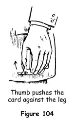

The revelation of a card face upwards in a face-down deck is a favourite feat with the card conjuror, and a few of these tricks have already been explained. A card reversed in the pack is also used as a secret artifice which makes possible many puzzling feats. There is one cardinal condition that applies to all the tricks in which a card is reversed in the pack - the fact that the principle must never be used with cards having an overall back pattern. The reason is obvious, for with such decks the slightest spreading of the cards reveals part of the white face of the reversed card.
Cards with a white margin on the back allow for a spread of about 9 mm (3/8 in) between cards without exposing any part of the back patterns. In fact, with a card face upwards in the deck, the cards can be spread in a fairly large fan without any risk of exposure.
We have already discussed methods of reversing a chosen card under the double lift. Before explaining the best feats in which reversed cards play the leading role, other ways of secretly reversing a card or cards at the top or bottom of the deck must be considered.
First Method
This is one of the best and easiest ways of reversing a single card either at the top or bottom of the deck.
1. Hold the deck in the left hand, turn half left and at the same time let the left hand drop to the side.
2. Push off the top card with the left thumb so that its side strikes against the side of your leg (figure 104). Move the hand downwards, the thumb still pressing on the back of the card which will make a half revolution. With the fingers press it flush with the other cards and replace the thumb on the top of the pack (figures 105 and 106).

The whole action takes only a second, and the fact that the left hand is out of sight momentarily will never be noticed.
Second Method
1. Under cover of squaring the pack, palm the top card.
2. Keep the grip of the first phalanxes of the right thumb and forefinger on the right-hand corners of the deck, and turn the hand to a vertical position.
3. Extend the left fingers and insert their tips under the lower side of the palmed card. Flex them and thus draw the card flush against the bottom of the deck, back downwards.
The action is masked by the back of the right hand, which then squares the cards again and is removed.
Third Method
This method makes use of the artifice already mentioned in 'Throughth' and Consequences.
1. Hold the pack in the left hand and secure a break under the top card with the left little finger, conversing as you do so.
2. Withdraw the bottom card and place it face upwards at the top. Give the impression that you are toying with the cards.
3. With the right thumb and middle finger at the ends, lift the two top cards as one, about 25 mm (1 in) above the pack. Drop the left thumb under the pack and turn it face upwards on the left palm.
4. Place the two cards held by the right hand on the face of the pack. Turn the pack face downwards, withdraw the bottom card and thrust it into the centre of the pack.
The card at the bottom is now face upwards.
Fourth Method
This method may be used to reverse a chosen card in the centre of the pack, or to reverse any card at the bottom.
1. Let us say that you have a chosen card at the top of the pack and wish to reveal it reversed at the centre. Hold the pack face downwards in your left hand. Place the right hand over it, thumb and fingers at the ends, and lift the inner end of the top card, holding a break under it by pressing inwards with the ball of the thumb.
2. Cut off the top half of the pack with the right hand, still holding the break with the thumb.
3. Drop the left thumb under the packet remaining in that hand, flip it face upwards and place it on top of the cards held in the right hand.
4. Place the left hand under the deck and drop into it all the cards below the break held by the right thumb. Move the left hand away, drop the thumb under this packet and flip it over, face upwards, on the palm.
5. You now hold a packet face upwards in each hand. Ask if either of the face cards is the chosen card. Receiving a denial, place the left-hand packet under that in your right hand and square the pack.
6. Ribbon spread the cards on the table and show the reversed card.
To reverse a card at the bottom for use in a reversed-pack trick, hold the pack face upwards and follow the above through to step 4. Place the left-hand packet upon those held by the right hand. Spread the cards from hand to hand, showing the faces of about three-quarters of the pack but preventing the lowest cards from spreading. Do not explain why you do this. Your reason for this is that you want everyone to notice that the cards all face in the same direction.
Reversed Location
It is a wise magician who varies his methods for obtaining his secret objectives, and it is a still wiser magician who sets apart certain methods for certain objectives for use in set tricks. For example, it is not good policy to use the same method for controlling a card twice in one routine. By allocating a certain method to a certain trick and always using that same method in that trick, not only is there less chance of the onlookers detecting your secret operations but your work will be so much the easier and smoother for you than if you made up your mind on the spur of the moment as to which method you would use.
The location by means of a reversed card is excellent for use as a variation of method, but it should not be used more than once in the same routine. The action is simplicity itself.
1. Secretly reverse the bottom card. There is no need to glimpse it first.
2. A card having been chosen and noted by a spectator, and the cards having been shuffled by you while retaining the reversed card at the bottom, use the key undercut method to place the reversed card above the spectator's card when it is replaced in the pack. Slope the packets downwards so that the reversed card cannot be seen.
3. Square the pack very openly and the onlookers must be convinced that the chosen card is lost, having been buried among the other cards.
4. To obtain control of the chosen card, turn half left and begin an overhand shuffle. As the middle of the deck is reached, run the cards singly until you see the reversed card, which will be facing you. Immediately thumb it off the deck, letting it fall to the floor. Stop the shuffle, drop the cards in your right hand on top of those in your left hand; apologising for your clumsiness, stoop and pick up the fallen card. Push this card into the deck and you have the chosen card at your disposal on the top of the deck.
In connection with this affected clumsiness, there are two classes of card conjurors. One class takes every opportunity of parading dexterity by using flashy flourishes and showy shuffles throughout the performance, whereas the other class handles the cards just as any card player would - indeed, sometimes affecting a little clumsiness by dropping a card or the like. In the first case the reaction of the onlookers is that they are not surprised by the results of the tricks, since the 'quickness' of the performer's hands has literally been thrown at them. His work is dismissed with the remark, 'He's clever with his hands,' and forgotten almost at once. In the second case, when the spectators see the cards handled with perfect fairness and without sleight of hand, as they think, the results simply seem to happen of their own accord. The magician's feats thereafter make a lasting impression on the minds of the onlookers and will be seen by them with pleasure over and over again.
TRICKS WITH THE REVERSES
Spellbound
This feat has been devised for the purpose of showing the use of the reversed card as a locator and the reversal of a card against the performer's leg. In effect, a chosen card is unmistakably buried in the deck and then discovered by the spectator himself in a mysterious way.
1. Have a card freely selected by a spectator and have him show it to everyone as you turn your head. Take the opportunity of secretly reversing the bottom card. It is not necessary to note what card it is.
2. Turn to the spectator, key undercut the pack for the replacement of the card, and thus place the reversed card above it at the centre. Square the pack very openly.
3. Turn half left and shuffle overhand, thumbing off the reversed card as explained above under reversed location. Drop the cards remaining in your right hand on those in your left, and pick up the fallen card with your right hand, at the same time reversing the chosen card on your leg. Show the card you dropped, asking, 'This doesn't happen to be your card?' The answer, of course, is 'No.' Thrust the card into the deck.
4. Turn your left side to the front and, holding the pack in your left hand, with the bottom card facing the audience, say, 'I want to show you that your card is not anywhere near the bottom.' The chosen card is now facing you; suppose it is the seven of clubs. Pull cards off the face of the deck with the left thumb, rather rapidly, but showing the full face of each card; at the same time mentally spell s-e-v-e-n o-f c-l-u-b-s, taking one card for each letter. Stop on the s and ask, 'Have you seen your card?' 'No.' Drop the cards in your right hand in front of those shuffled off on to the left hand, run two or three more cards on to the left hand, and drop the right-hand cards behind these. The chosen card, the seven of clubs, is now in position to be spelled out from the top of the pack and to appear after the last letter in the spelling.
5. The next move is a bold one, but in the many times the feat has been performed it has never been challenged. Turn the deck face downwards in the left hand, take off a bunch of cards - seven or eight - and fan them face outwards, asking the spectator, 'Is your card among these?' These cards have already been shown, but that is never noticed and the answer again is 'No.' Replace these cards on the top of the pack.
6. Hand the pack to the spectator, instructing him to hold it in his left hand behind his back. 'Now, you must think intently of the name of your card, the full name. For example, the king of hearts or whatever it may be, and don't forget the of. Your concentration will put a spell on the cards, and you must spell the card's name mentally, bringing forwards with your right hand one card from the top of the pack for each letter. Will you do that please?'
7. The spectator acts accordingly, bringing forwards one card at a time, and you keep check as he does so. When he has brought forwards the card for the last letter he stops. Nothing has happened, and you affect to be a little embarrassed. 'You have spelled the name of your card?' you ask. He assents. 'Very strange!' you say. 'I wonder what has happened. What was the name of your card?' He names it. 'Kindly bring the pack forwards!' He does so and there face upwards on the deck staring him in the face is his card, leaving him spellbound. 'The cards will have their little joke,' you remark.
A Tipsy Trick
A chosen card is found reversed in the deck under peculiar circumstances. The trick is an amusing one and is used by many of the best card conjurors in their intimate performances.
1. Begin your patter, 'Magicians often have disconcerting adventures. I would like to show you something that happened to me the other night. To illustrate the mishap exactly, will you select a card?' Offer the deck to a spectator and ask him to choose a card.
2. 'Remember that card, please. You had better show it to the others so that they can enjoy the fun. Right? Replace the card please.' Control the chosen card to the top by the overhand shuffle control.
3. 'At this point I always hand the cards out to a spectator to be shuffled. Generally they shuffle like this.' Shuffle overhand, running the chosen card to the bottom and back to the top. Then make another overhand shuffle, retaining the card there. 'That is called the overhand shuffle, and with long practice it is easy to follow the movements of the chosen card among the others.
4. 'Sometimes the cards are shuffled like this.' Split the deck and execute an end-to-end riffle shuffle, finishing with the waterfall flourish retaining the chosen card at the bottom. 'That is somewhat more confusing, but with a keen eye the gyrations of the card can still be followed.
5. 'On rare occasions someone will use the Chinese shuffle, like this.' Spring the cards from hand to hand and bring the hands together with a loud slap. 'That really is confusing, but nothing to what happened to me the other night. I offered the deck to a lady to shuffle, and a man just behind her reached out and grabbed the cards. “Here, I'll migsh 'em up for you,'' he said. He'd evidently had several drinks too many, so I knew I was in for it. This is what he did.'
6. Holding the deck face downwards in your left hand in dealing position, with the left thumb push off a small packet of cards, say half a dozen, over the side of the deck. Turn your right hand with its back upwards, and take the packet with the thumb underneath and the fingers above; then turn that hand palm upwards, bringing the cards it holds face upwards.
7. Push off another small packet with the left thumb, and take them with the fingers of the right hand underneath the face-up packet it holds. Turn the right hand with its back upwards, and take another packet with the right thumb. Again turn the hand, this time palm upwards and take some more cards with the fingers. Do this rather rapidly.
8. Continue these actions until one card only, the chosen card, remains in the left hand. Slap this card face down on the top card in the right hand, which will be face upwards. Throughout these movements simulate the actions of a slightly tipsy individual. Handle the cards sloppily and keep talking, 'I'll migsh 'em up. Fash up, fash down, fash up, fash down, thash the way to migsh the cards,' and so on.
9. 'Finally, he tried to square the deck.' Do so, holding it in your left hand, the outer end between the thumb and middle finger towards the onlookers. The result of all the apparently higgledy-piggledy mixing has been simply to divide the deck into two portions, one face upwards and one face downwards; thanks to the bend given to the cards by the spring flourish, there will be a break between them at the inner end of the deck.
10. Seize the lower half by the end with your right hand, between the thumb and middle finger; draw it out with a little upward flourish and hold it face downwards against the table top. Follow this action with your gaze. Immediately move the left hand towards the right, turning it back upwards in the action, and place it beside the right hand in position for making a riffle shuffle. Both packets are now face downwards, whereas the chosen card is face upwards at the bottom of the left-hand packet. Riffle shuffle, dropping the chosen card first, and cover the shuffle with your hands so that no one can see that the cards are all turned one way.
11. Square the deck, turn it over so that the single face-down card is uppermost, then cut at about the middle and complete the cut. The audience will be convinced that the cards are really face up or face down indiscriminately. '“There,” he said as he handed the deck back. “The cards are migshed. Lash shee what you can do with 'em.” Well, he had me in a fix. The most skilful card conjuror living could not have followed the movements of the chosen card. Luckily I called to mind an emergency spell. “Arbadacarba,” I muttered. That's abracadabra backwards and the most powerful incantation we have. Be very careful how you use it. If it has worked for me, all the cards will have righted themselves, face upwards, while the chosen card will remain
face downwards. What was your card? The seven of diamonds? Let's see.'
12. Spread the cards ribbonwise with a flourish, and they are seen to be all face upwards except one card in the middle, which is face downwards. With the tip of your right forefinger push this card forwards out of line. Turn it slowly face upwards. It is the selected card!
This feat is one of the most amusingly effective tricks that can be performed for an intimate group.
Double Reverse
You will get great satisfaction from this trick, because its simplicity, ease of execution and strong climax make it one of the best of the self-working tricks.
1. Secretly note the bottom card and reverse it, so that it is face upwards in the face-down pack. Let us say that it is the ace of diamonds. Spread the cards between your hands as if to have one drawn, then change your mind and square the pack. This shows that all the cards are face downwards without your stressing the fact.
2. Invite someone to cut off the top half of the pack and retain it (figure 107). Hold the lower portion in your left hand, being careful not to expose the reversed card at the bottom. Have the spectator remove a card from the centre of his portion, look at it and remember it. You do the same thing, but actually you only pretend to remember the card.
3. Say, 'Let me put my card in your packet,' and do so, pushing it flush into the centre of the cards he holds. As you do this, drop your left hand with its packet and turn it over, so that the single reversed card is at the top. Everyone is watching you insert your card in the spectator's packet and the reversal goes unnoticed.
4. Take the spectator's card and without showing it say, 'That's fair play, isn't it?' Thrust his card, face downwards, into your half of the pack. Do not spread the cards when you do this. Because of the reversed card at the top, your packet appears to be face downwards and the audience will be satisfied that his card is lost in your packet.
5. Reach for his packet, saying, 'This is the fairest trick I know, up to this point. From now on I cheat!' Drop your left hand to your side as you say this, again turning over your portion and returning the reversed card to the bottom.
6. Place his packet on top of yours and square the pack. 'Did you see what I did?' you ask. 'Nothing. Not a single solitary thing.'
7. Make one complete cut, saying, 'You surely saw what I did then? Nothing. Just a perfectly honest cut. At this rate, it won't be much of a trick, will it?'
8. 'But I did cheat a little, just the same, when you blinked. My card was the ace of diamonds [here you must give the name of the card you reversed at the bottom in step 1] and yours - what was your card?' The spectator names it. 'The seven of hearts! Just as I thought. Let me show you how I cheated.'
9. Spread the cards face downwards on the table in a long ribbon and the two cards, amazingly enough, are seen to lie face upwards in the spread.
Mentalivity
In this puzzling feat the card of which one person thinks is found at the number thought of by a second person. You cannot have known either number beforehand.
1. Have the pack shuffled and returned to you.
2. Request spectator A to think of a number between one and ten and, as you count the first ten cards, to remember the card that falls on his number. Show him one card at a time, counting them aloud, until you have shown ten cards. Replace them on the top in the same order.
3. Invite spectator B to think of a number between ten and twenty. Gaze at him intently, nod your head knowingly; then turn and gaze at spectator A, as if divining his thoughts. Again you indicate that you have succeeded in an abstruse calculation.
4. Place the pack behind your back. Silently remove the top twelve cards and place them at the bottom but in reversed position, that is to say, in the same order but face upwards. As you do this, explain, 'I shall attempt to read your thoughts and prove that I have done so beyond a shadow of doubt.'
5. Bring the pack forwards, its outer end sloping downwards so that the reversed cards at the bottom cannot be seen, and ask spectator A to name the number of which he thought. Let us say that he thought of six. Deal five cards face downwards on the table and show the sixth card, saying, 'Your card is no longer in the sixth position.'
6. Next turn to spectator B, saying, 'Kindly name the number of which you are thinking.' When he names it - say it is fifteen - nod affirmatively. 'I thought so.' You now make a simple calculation, in which you deduct six from fifteen, giving you a key number of nine. Whatever may be this key number, which you arrive at by deducting A's number from B's, you must deal this number of cards from the top of the pack, turn the deck over, and continue the deal to the required number with the cards then at the top.
You do this in the following manner. Say to spectator B, 'I was confident that you would think of the number fifteen, and I have placed this gentleman's card at your number.' Deal the key number of cards from the top of the pack (nine in our illustration), counting each one aloud. Pause, pick up the last card dealt and turn it face upwards, saying, 'The ninth card sometimes & that isn't your card, is it?' to spectator A. You do this to supply misdirection. While all eyes are on this card drop your left hand to your side, place your thumb under the pack and turn it over. This brings the reversed cards at the bottom uppermost.
7. Now continue the deal with these cards until you come to spectator B's number, fifteen. Remove this card, saying, 'This is the card at the number of which you were thinking. That is correct?' He states that it is. Turn to spectator A, saying, 'Now, for the first time, will you name the card of which you are thinking?' He names the card, say the ace of clubs.
8. Recapitulate briefly what has been done. 'You will remember that you thought of a card at a certain position in the pack. This gentleman thought of another number and I have placed the card at his number before all of us. Would you be surprised if this card should prove to be your ace of clubs? You would? Then let us see if it is.'
9. Turn the card face upwards, showing that it really is the required card.
To right the reversed cards that are lowermost in the pack, pick up one of the packets of dealt cards and drop them face upwards on the table as you talk with those about you. Drop the pack on them in an absent-minded manner. In a moment, pick up all the cards. Remove all the reversed cards at the bottom, right them and replace them. It will seem that in gathering the pack you absently made an error and corrected it.
Mountebank Miracle
Someone thinks of a card without touching it. When you deal the cards a moment later the card appears reversed in the pack.
1. Have the pack shuffled and placed on the table, saying, 'In a moment I shall ask you to think of a card under conditions that will convince you that chance alone dictates the card of which you will think. When I turn my back, cut off any small number of cards, about ten or twelve or so. You will not know how many cards you have cut and neither will I. Count the cards, remember how many there are and put them in your pocket.'
2. This done, turn back and take the rest of the pack. 'You have a number arrived at by chance. As I deal the cards, kindly remember the card which falls on your number.' Deal fifteen cards, counting each one aloud, lifting each so that its face can be seen, and dropping the cards face downwards in a neat pile. This action reverses their order.
3. Pick up the dealt packet and replace it at the top of the deck, then remember that he still has some cards in his pocket. Turn away and have him replace these on top of the pack.
4. Deal cards face downwards rather swiftly, dropping them about 30 cm (12 in) in front of you. Silently count the cards and when you deal the sixteenth card, which will be the spectator's card, flip it face upwards, lengthways, and continue the deal for two or three cards without the slightest pause. The effect is that the card was reversed in the pack and that you simply dealt it, because the spectators watch the cards as they fall on the table and not your hands. The effect of showing the mentally selected card reversed in the pack makes this a fine quick trick.